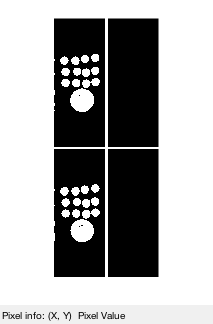
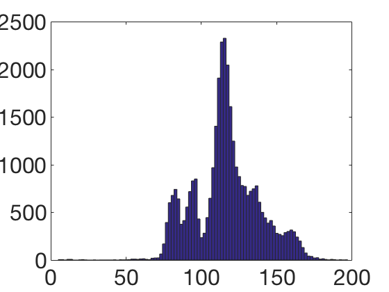
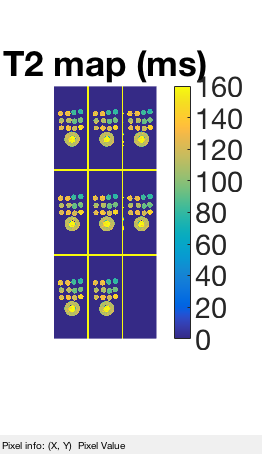
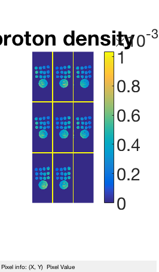

Contents
T2imgs_raw = sqreadcfl('se_cimg');
T2imgs_raw = T2imgs_raw(:,:,[4, 12], :, :);
[ny, nz, ns, nc, nt] = size(T2imgs_raw);
Size: 256 102 16 4 1 5
d1 = dimnorm(reshape(T2imgs_raw, ny, nz, ns, []), 4);
T2mask = d1 > .1*max(d1(:));
st(T2mask)
echo_times = [10, 30, 50, 70, 120]*1e-3;
ans =
0 1

proton = zeros(ny, nz, ns, nc);
T2est = zeros(ny, nz, ns, nc);
300 sec on [256, 256, 6, 32]
myfun0 = @(v, echo_times) complex(v(1), v(2)) * exp(-echo_times*v(3));
myfun = @(v, echo_times) [real(myfun0(v, echo_times)), imag(myfun0(v, echo_times))];
ops = optimoptions('lsqcurvefit','TolFun', 1e-10, 'Display', 'off');
LB = [-inf, -inf, 1/10];
UB = [inf, inf, 1/5e-3];
tic
s = 60;
p = s/(ny*nz*ns*nc);
rvals = rand(ny*nz*ns*nc, 1);
fprintf(1,'|%s|\n|\n',repmat('-',1,s));
parfor ii=1:ny*nz*ns*nc
if rvals(ii) < p
fprintf(1,'\b.\n');
end
[yy, zz, ss, cc] = ind2sub([ny, nz, ns, nc], ii);
mm = T2mask(yy, zz, ss);
if mm == 0
proton(ii) = 0;
T2est(ii) = 0;
else
y_cplx = squeeze(T2imgs_raw(yy,zz,ss,cc,:));
y = [real(y_cplx), imag(y_cplx)];
v0 = [1e-4, 1e-4, 1/60e-3];
[v, resnorm, res, exitflag, output] = ...
lsqcurvefit(myfun, v0, echo_times.', y, LB, UB, ops);
proton(ii) = complex(v(1), v(2));
T2est(ii) = 1/v(3);
end
end
toc
|------------------------------------------------------------|
|.........................................................
Elapsed time is 124.524118 seconds.
T2vals = T2est(T2est~=0);
figure(1); hist(T2vals(T2vals<.2)*1000, 100); faxis
st(1000*bsxfun(@times, T2est, T2mask), [0, 160]); colormap('parula'), colorbar;
title('T2 map (ms)'); faxis
stc(bsxfun(@times, proton, T2mask)); colormap('parula'), colorbar;
title('proton density'); faxis
  